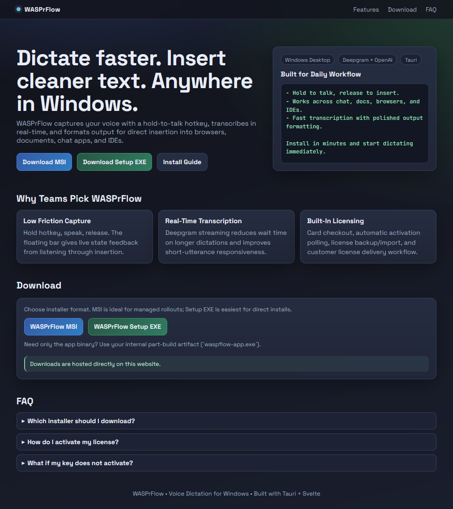
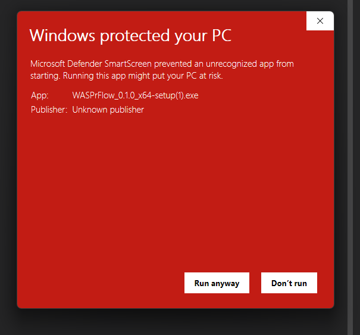
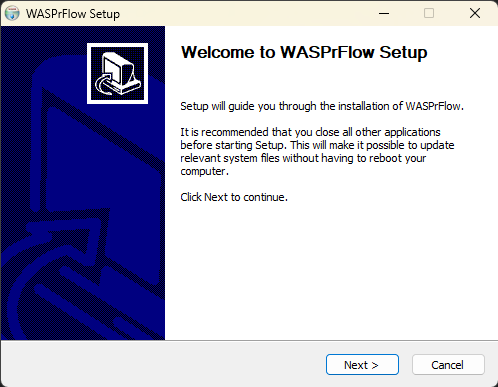
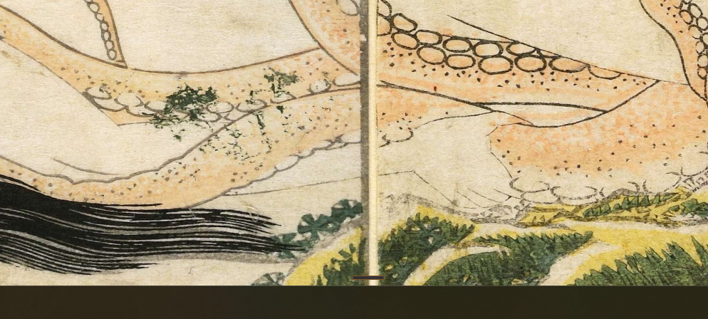
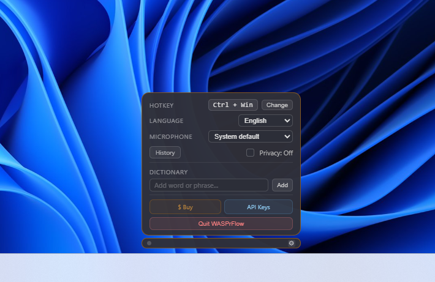
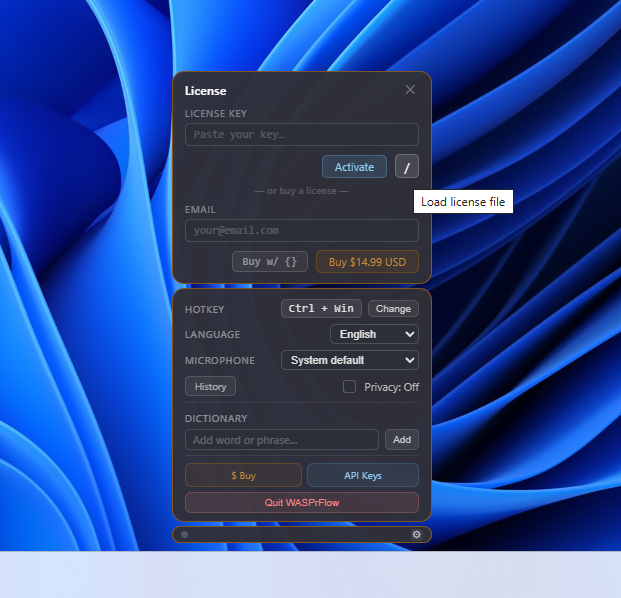
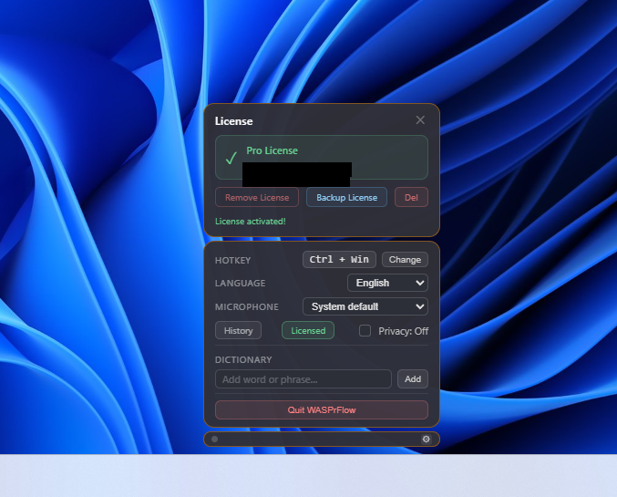
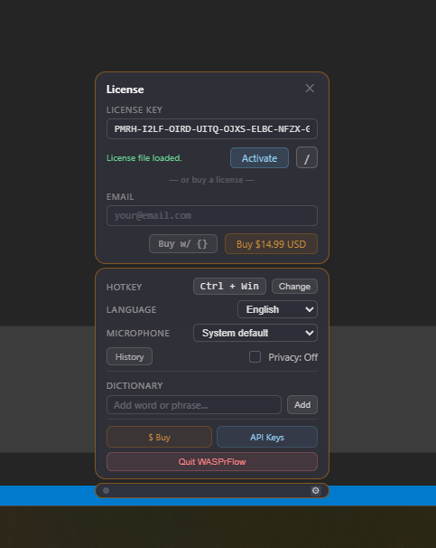
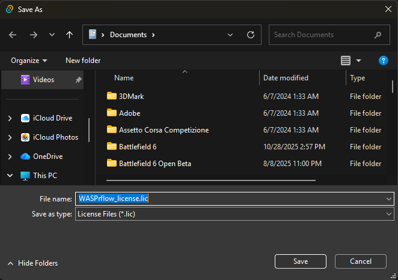
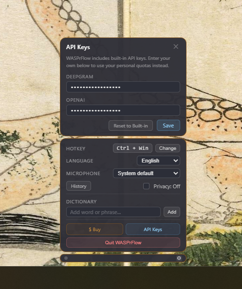

Step 1: Open the download page
Use either WASPrFlow MSI or WASPrFlow Setup EXE.

This guide covers install, first launch, licensing, API keys, expected behavior, and troubleshooting for Windows users.
Recommended installer: Use Setup EXE for most users. Use MSI for managed business rollouts (RMM, Intune, SCCM, GPO workflows).
Use either WASPrFlow MSI or WASPrFlow Setup EXE.

Windows may show an unknown publisher prompt. Select Run anyway to continue installation.

Run through the setup wizard and finish installation.

The compact bar is your always-available control point. Use your configured hotkey to dictate and insert text.

Open settings from the bar. Configure hotkey, language, microphone, privacy mode, dictionary, and open licensing or API keys.

From the License panel, paste a key, import a saved .lic file, or purchase with your email.

After activation, this panel shows your licensed account and action buttons to remove, back up, or delete the local license file.

After import, the app confirms file load and enables activation with the loaded key.

After successful activation, you should see Pro License and management actions for remove, backup, and delete.
Use Backup License to save a reusable file named WASPrflow_license.lic.

.lic file.WASPrFlow includes built-in keys. Add your own Deepgram/OpenAI keys if you want dedicated quota, then click Save.

.lic and activating again.